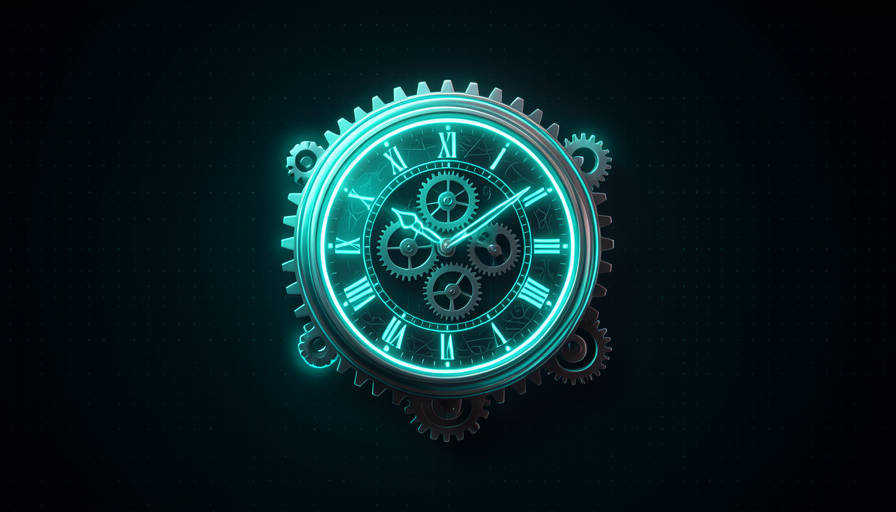

📖 Glossário vivo (leia antes — volte sempre que precisar)
Este módulo é cheio de termos de automação. Definimos os novos em linguagem simples aqui — os fundamentos (modelo, agente, harness, skill) já vieram na Trilha 1:
.github/workflows/.tsc no TypeScript) que pega erros de tipo antes de rodar. É o "passou no controle de qualidade" barato.0 9 * * *).🦴 Esqueleto da Action
🧠 Imagine assim: uma fábrica com uma esteira. Toda vez que uma peça nova chega (um PR), a esteira liga sozinha: pega a peça, passa no controle de qualidade, chama o inspetor (o agente) e cola um adesivo com o parecer. Você não fica ligando a esteira na mão — ela reage ao gatilho. Uma GitHub Action é essa esteira, só que pra código.
Pocock descreve uma "agent review action": uma GitHub Action que "roda num PR, faz checkout, type check, roda o review agent (um prompt local), e responde 'looks good'." O segredo de toda Action é o esqueleto: ela tem um gatilho (o on: — o que liga a esteira), um ou mais jobs (o que executa), e dentro de cada job uma sequência de steps (os passos). Esse esqueleto é sempre o mesmo — muda só o que vai dentro.
Por que isso destrava tanto? Porque "run agents on GitHub Actions é unreasonably effective" — você paraleliza quanto quiser sem se preocupar com recursos da máquina local. A esteira roda na nuvem do GitHub: seu notebook pode estar desligado. O prompt local (um arquivo de instruções de review que mora no próprio repo) é o cérebro do inspetor — versionado junto com o código, igual a uma skill. Erro comum: achar que precisa de um servidor próprio rodando 24h. Não: a Action só acorda no gatilho, faz o trabalho, e desliga — você paga só pelos minutos usados.
Gatilho → job → steps. Esse esqueleto é universal; o conteúdo dos steps é o que você troca.

Abaixo está o YAML real da review action — a primeira das duas peças copiáveis deste módulo. Salve como .github/workflows/review.yml. Note o esqueleto: on: (gatilho), jobs:, e os steps: na ordem certa. Copie e ajuste só o comando do seu type check:
name: agent-review
on:
pull_request:
types: [opened, synchronize, reopened]
jobs:
review:
runs-on: ubuntu-latest
permissions:
contents: read
pull-requests: write
steps:
- name: Checkout PR
uses: actions/checkout@v4
- name: Type check
run: npx tsc --noEmit # guard rail barato e determinístico
- name: Review agent
run: npx claude -p "$(cat .github/review-prompt.md)" --output review.md
env:
ANTHROPIC_API_KEY: ${{ secrets.ANTHROPIC_API_KEY }}
- name: Comment on PR
run: gh pr comment "$PR" --body-file review.md
env:
GH_TOKEN: ${{ secrets.GITHUB_TOKEN }}
PR: ${{ github.event.pull_request.number }}
Em 1 frase: uma Action é uma esteira na nuvem — gatilho liga, steps executam, e o resto da sua máquina nem precisa estar ligada.
Indo mais fundo (opcional): por que o prompt de review mora no repo?
Se o "prompt local" do review vive dentro do repositório (ex.: .github/review-prompt.md), ele é versionado junto com o código: melhora num PR, fica gravado no histórico, e qualquer pessoa do time vê a mesma instrução. É o mesmo princípio do DRY humano (módulo 3-6): "fiz este review 100 vezes → vira um procedimento, distribuo pro time, todo mundo revisa igual". A Action é só a esteira; o prompt é a skill que ela executa.
🔧 checkout → type check → review
🧠 Imagine assim: antes do médico especialista (caro) examinar o paciente, a enfermagem já mediu pressão e temperatura (barato e rápido). Se a temperatura já está absurda, nem precisa do especialista. O type check é a triagem barata; o review agent é o especialista — e você só chama o especialista quando o básico passou.
Esses três steps são a espinha da review action, na ordem que Pocock cita: "faz checkout, type check, roda o review agent". A ordem importa por economia: primeiro você baixa o código, depois roda a checagem determinística e barata (o type check pega erros óbvios em segundos), e só então gasta tokens com o agente. Se o type check falhar, muitas vezes nem vale acordar o agente — você já sabe que o PR está quebrado.
Isso é puro "economia de tokens" (módulo 1-5): o agente é o passo mais caro, então cerque-o de guard rails baratos. Outro motivo da ordem: o agente revisa melhor com o código já compilando. Erro comum: jogar tudo no agente de uma vez ("revise e arrume os tipos e rode os testes"). Não — separe os passos. O determinístico (type check, lint, testes) faz o que é determinístico; o agente faz o que exige julgamento. Cada um no seu quadrado, e o caro por último.
Recuperação rápida: por que o type check vem antes do review agent?
Em 1 frase: baratos e determinísticos primeiro (checkout, type check), o agente caro só por último — e só se o básico passou.
💬 Comentar no PR
🧠 Imagine assim: o inspetor da fábrica não guarda o parecer na cabeça — ele cola um bilhete visível na peça: "ok" ou "atenção no ponto X". Quem chegar depois lê o bilhete. O comentário no PR é esse bilhete: o resultado do agente fica onde o time olha, não perdido num log.
O passo final da review action é comentar no próprio PR — Pocock diz que o agente "responde 'looks good'" ali mesmo. Por que comentar no PR e não num e-mail ou num chat? Porque o PR é onde a decisão acontece: o comentário fica colado ao diff, ao lado da discussão, e o GitHub já avisa quem está acompanhando. É a saída natural do AFK na nuvem — o agente trabalha sozinho e deixa o parecer visível, como faz o bot github-actions que posta um "Triage" com TL;DR e dificuldade (você viu isso no módulo 4-4, Loops × Filas).
Aqui mora o segundo valor do review (módulo 4-6): o comentário não serve só de gate ("isto é perigoso, segura") — ele te dá observabilidade. Você lê o que o agente achou e enxerga seu próprio encanamento. Erro comum: deixar o agente aprovar/reprovar em silêncio. Se o parecer não aparece no PR, você perde a chance de melhorar o harness com o tempo — e cai naquela armadilha do "quem revisa a IA que diz que está tudo bem?". O comentário visível é o que mantém você no comando.
🔬 Exemplo resolvido: um PR passa pela esteira inteira
Dev abre o PR #128 ("adiciona endpoint de login"). A review action dispara:
- checkout — a Action baixa a branch do PR na nuvem (sua máquina nem ligada).
- type check —
tscroda em 12s. Passa. (Se falhasse, o agente nem seria chamado.) - review agent — o agente lê o diff com o prompt local de review. Acha um input não validado.
- comenta no PR — posta: "✅ type check ok; ⚠️ validar input em /login". O dev vê na hora.
Resultado: revisão em ~2 min, sem você abrir o laptop, e o parecer fica registrado no lugar certo.
Em 1 frase: o parecer do agente vai pro PR — onde o time olha — pra servir de gate e te dar observabilidade do seu sistema.
🗓️ Cron diário rotativo
🧠 Imagine assim: "se alguém vive roubando sua bicicleta, talvez compre um cadeado." Em vez de só corrigir um problema de segurança quando ele explode, você bota um guarda que faz uma ronda todo dia — e cada dia ele inspeciona uma rua diferente do bairro. Em um mês, o bairro inteiro foi revisado, sem ninguém se cansar.
A segunda automação é a joia do módulo. Pocock conta que o modelo Fable achou bugs profundos e falhas de segurança que outros não viram — mas frisa: não é mágica do modelo. "Você descobriria esses bugs com modelos mais baratos se olhasse nos lugares certos e desse o prompt/harness certo." A receita: um cron diário de security review que "cada dia checa uma parte nova do repo, com um modelo relativamente simples". O cron é o agendador; o "rotativo" é o truque — você não revisa o repo inteiro todo dia (caro e lento), você revisa uma fatia por dia, girando pelo repositório.
Por que rotativo funciona tão bem? Porque dilui o custo no tempo e cobre tudo eventualmente. Repo com 30 pastas? Uma pasta por dia → cobertura total em 30 dias, com um modelo barato. E o ganho real não é só achar o bug: é a lição. "O que você aprendeu? Que há problemas de segurança no seu código — você deveria ter algo que roda e checa por mais no futuro." Isso é o coração dos sistemas auto-melhoráveis (módulo 4-5): você não revisa só o código, revisa o sistema que produz o código. Erro comum: rodar o security review no repo inteiro de uma vez — fica caro, demora, e você acaba desligando. A rotação é o que torna o hábito sustentável.
A linha de crontab é o coração técnico disso — e a segunda peça copiável do módulo. São cinco campos — minuto, hora, dia-do-mês, mês, dia-da-semana — e o * significa "todo". A linha abaixo é a real que você cola no schedule: de uma GitHub Action pra rodar todo dia às 9h UTC. Copie:
# campos do cron: minuto hora dia-do-mês mês dia-da-semana
# "0 9 * * *" = todo dia às 09:00 UTC
on:
schedule:
- cron: "0 9 * * *" # security review diário, fatia rotativa do repo
Em 1 frase: um cron diário revisa uma fatia rotativa do repo com modelo barato — compra o cadeado antes de roubarem a bike de novo.
Indo mais fundo (opcional): como decidir QUAL fatia checar hoje?
Dois jeitos simples. (1) Por calendário: use o dia do mês para indexar uma lista de pastas (dia 1 → pasta 0, dia 2 → pasta 1…). (2) Por prioridade: mantenha uma fila das pastas "mais quentes" (mais commits recentes, ou que tocam auth/pagamento) e gire por ela primeiro. O importante é que a fatia seja pequena e diferente a cada dia — assim o modelo barato dá conta e o custo fica plano. Pocock também sugere achar a causa raiz: por que esse bug viveu tanto tempo sem você notar? A resposta vira a próxima melhoria do sistema.
🧱 Estruturar dados do explore
🧠 Imagine assim: o detetive volta da investigação. Se ele te conta a história num parágrafo enrolado, você tem que ler tudo pra decidir. Mas se ele entrega um formulário preenchido — "Grave? Sim. Dá pra corrigir sozinho? Sim. Confiança? 90%" — você decide em 2 segundos, e até um robô consegue ler. O segredo do AFK é fazer o agente entregar o formulário, não a história.
Pocock descreve o fluxo completo do explore: "bug de telemetria (Sentry) → cria issue → label explore → o agente retorna dado estruturado (dá pra corrigir já ou precisa de humano?) → implementa → revisa → tag auto-merge ou pinga o humano." O ponto-chave é o structured output: em vez de o agente devolver um textão, ele devolve campos fixos — gravidade, se é auto-corrigível, confiança. Por quê? Porque um campo "auto-corrigível: sim/não" é algo que outro programa consegue ler e usar pra decidir o próximo passo sozinho. Texto solto, não.
É o que liga a fila inteira (módulo 4-4): a issue ganha labels (agent:explore → agent:in-progress), o agente faz a triagem AFK e devolve o dado estruturado, e esse dado decide o roteamento — corrige já, ou empurra o human-in-the-loop checkpoint mais pra frente. "Push human-in-the-loop checkpoints further toward the final output." Erro comum: deixar o agente responder em prosa e tentar fazer um regex adivinhar se ele aprovou. Frágil. Peça JSON com campos definidos — assim a automação encadeia sem ambiguidade.
{
"issue": 795,
"severity": "high",
"auto_fixable": true,
"confidence": 0.9,
"root_cause": "input não validado em /login",
"suggested_label": "agent:implement",
"needs_human": false
}
Em 1 frase: faça o explore devolver campos (JSON), não prosa — assim a automação lê, decide e encadeia sozinha.
⚠️ Auto-merge com cautela
🧠 Imagine assim: um portão automático que abre sozinho é uma maravilha — até o dia em que abre pro carro errado. A solução não é trancar o portão pra sempre; é colocar condições claras (só abre pra placa cadastrada, de dia, com o sensor ok). Auto-merge é esse portão: ótimo com gates, perigoso solto.
No fim do fluxo, o agente "tag auto-merge ou pinga o humano". Auto-merge é o ápice do AFK: o PR entra no código principal sem ninguém clicar. Mas é também o lugar mais perigoso — por isso o nome do tópico é "com cautela". Pocock insiste no objetivo certo: "push human-in-the-loop checkpoints further toward the final output" — empurre o ponto de aprovação pra frente, removendo checkpoints onde dá, com cuidado. Não é tirar o humano de tudo; é tirá-lo de onde ele não agrega.
Onde dá pra auto-mergear com tranquilidade? Quando "o PR é só refactor interno, não muda comportamento — a IA diz 'não precisa revisar'". Mas aí vem a pergunta de ouro de Pocock: "who reviews the AI that says it's fine?" (quem revisa a IA que diz que está tudo bem?). A resposta: você precisa amostrar alguns PRs que o agente aprovou sozinho, pra calibrar a confiança no tempo. "We're reviewing not just the code, but the SYSTEM that produces the code." Erro comum: ligar auto-merge em tudo no dia 1. Comece estreito (só os campos auto_fixable: true + confidence ≥ 0.9 + type check verde), audite uns dias, e só então amplie. Cautela aqui é o que mantém o sistema confiável.
Recuperação rápida: qual é a postura certa do Pocock sobre auto-merge?
Em 1 frase: auto-merge é um portão automático — ótimo com gates claros, e você ainda amostra "quem revisa a IA que diz que está tudo bem?".
🧾 Resumo do Módulo
Próximo módulo:
5.6 — Review fluido + onde achar: vídeo walkthrough com TTS, otimizar o review humano, e onde pegar skills prontas (mattpocock/skills, aihero.dev/skills).